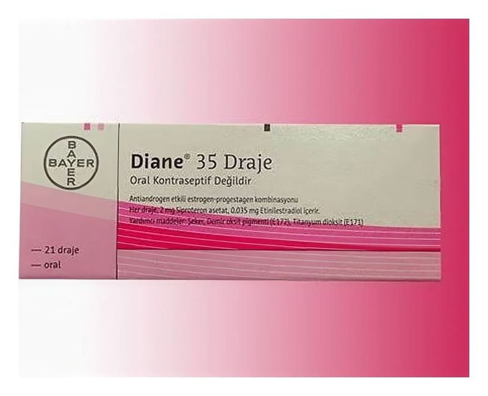

Diane 2 mg/35 mcg Kaplı Tablet, 21 Adet

Ne için kullanılır
KT · Bölüm 1• DIANE, 21 tabletlik takvimli blister ambalajlarda bulunur. Tabletler bombeli ve bej rengindedir. Her bir kaplı tablet etkin madde olarak 2 mg siproteron asetat ve 0,035 mg etinilestradiol içerir. DIANE laktoz monohidrat (sığır kaynaklı) içerir.
DIANE östrojen (kadın cinsiyet hormonlarından biri) ve antiandrojenik (erkek cinsiyet hormonlarının bazı doğal etkilerini gideren) aktiviteye sahip progesteron (kadın cinsiyet hormonlarından biri) hormonu içerir.
Bu ilacı kullanmaya başlamadan önce bu KULLANMA TALİMATINI dikkatlice okuyunuz, çünkü sizin için önemli bilgiler içermektedir.
• Bu kullanma talimatını saklayınız. Daha sonra tekrar okumaya ihtiyaç duyabilirsiniz. • Eğer ilave sorularınız olursa, lütfen doktorunuza veya eczacınıza danışınız. • Bu ilaç kişisel olarak size reçete edilmiştir, başkalarına vermeyiniz. • Bu ilacın kullanımı sırasında, doktora veya hastaneye gittiğinizde bu ilacı kullandığınızı doktorunuza söyleyiniz. • Bu talimatta yazılanlara aynen uyunuz. İlaç hakkında size önerilen dozun dışında yüksek veya düşük doz kullanmayınız.
• DIANE doğurganlık çağındaki kadınlarda aşırı yağlanma ile birlikte veya tek başına orta dereceli ila şiddetli akne (sivilce) tedavisi ve/veya aşırı kıllanma gibi cilt rahatsızlıklarının tedavisinde kullanılır. Doğum kontrol özellikleri nedeniyle, yalnızca doktorunuz hormonal kontraseptif (doğum kontrol ilacı) tedavisinin uygun olduğunu düşündüğü takdirde reçete edilebilir. DIANE, akne tedavisinde yalnızca cilde uygulanan veya tüm vücudu etkileyen antibiyotik tedavisinin başarısız olduğu durumlarda kullanılmalıdır. Ciltle ilgili bir tedavi için DIANE kullanıyorsanız, aynı zamanda farklı bir hormonal kontraseptif kullanmamalısınız. • Cilt sorununuz düzeldiğinde ve DIANE kullanmayı bıraktığınızda daha önce tercih ettiğiniz/asıl kontrasepsiyon (doğum kontrol) yönteminize geri dönmelisiniz. • Doğum kontrol ilacı gibi etki gösterdiğinden diğer hormonal doğum kontrol ilaçlarıyla birlikte kullanılmamalıdır.
Cilt sorunlarının tedavisi Androjenler deride kıl gelişimini ve yağ bezlerini uyaran hormonlardır. Çok fazla androjen üretimi olduğunda veya androjen etkisine duyarlıysanız, yağ bezleri çok fazla sebum üretebilir. Bu durum yağ bezlerini bloke edebilir ve böylece enfeksiyon gelişebilir, iltihaplı akne noktaları oluşabilir. DIANE androjenlerin cildinizi etkilemesini durdurur ve üretilen androjen miktarını azaltır.
Doğum kontrolü DIANE 21 günlük bir doğum kontrol ilacı dır; 21 gün boyunca her gün bir tablet alınır ve sonraki 7 gün boyunca hiç tablet alınmaz. DIANE Klamidya (cinsel yolla bulaşan bakteri) veya HIV enfeksiyonu (AIDS) ve diğer cinsel yolla geçen hastalıklara karşı koruma sağlamaz. Bu tip hastalıkların bulaşması ancak kondomlar ile önl enebilir. DIANE’in hamileliği önlemesi için belirtildiği şekilde alınması gerekir.